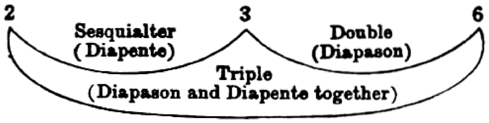

Chapter 26: Musical Consonances & Philolaus’s Cube as Geometric Harmony¶


1. We already recognized, in our earlier division of what exists, that relation belongs peculiarly to harmonic theory; yet the musical ratios of the concords in harmony are likewise discovered preeminently in this very mean. Most elementary among these is the fourth (diatessaron), in the superparticular ratio of \(4 : 3\), appearing as term to term in the double-extreme example, or as difference to difference in the triple-extreme example—these being the differences of \(6\) with \(2\) and again of \(6\) with \(3\).
f. 0294 · p. 278Immediately after this comes the fifth (diapente), which is sesquialter, as \(3 : 2\) or again \(6 : 4\), term to term. Next, the compound of both of these—the sesquialter together with the sesquitertian—is the octave (diapason) placed directly after them, subsisting in the double ratio, as \(6 : 3\) in both examples, term to term. Next is the octave together with a fifth (diapason kai diapente), preserving at once the triple ratio of both combined, since it is a compound of the double and sesquialter together, as \(6 : 2\), term to term, in the triple-extreme example, and likewise difference to difference in the same; while in the double-extreme example it appears as the greatest term to the difference between itself and the mean, or as the difference of the extremes to the difference of the lesser terms.
f. 0295 · p. 279Last and greatest concord is what is called the double octave (dis diapason), as it were twice double, subsisting in the quadruple ratio—as the middle term in the double series to the difference of the lesser terms, or the difference of the extremes in the triple series to the difference of the lesser terms. 2. Some thinkers, following Philolaus, believe it is called harmonic because it attends upon every geometric harmony—and they call the cube a geometric harmony because it is fitted together across all three dimensions, equally by equal by equal. For in every cube this mean is mirrored: the sides (edges) of every cube are \(12\), the angles (vertices) \(8\), and the plane faces \(6\). Thus \(8\) is the harmonic mean between \(6\) and \(12\). For as the extremes stand to each other, so stands the difference of the greatest and the mean to the difference of the mean and the least; again, the mean is greater than the less by one fraction of itself and less than the greater by another fraction of itself, yet it is greater and less by one and the same fraction of the extremes themselves; and besides, the extremes added together and multiplied by the mean produce twice the product of the extremes with one another. Moreover, the fourth is \(8 : 6\), which is sesquitertian; the fifth is \(12 : 8\), which is sesquialter; the octave, being the compound of both, is \(12 : 6\), which is double; the octave together with a fifth, being triple, is the difference of the extremes to the difference of the lesser terms; and the double octave is the middle term to the difference between itself and the least. Most fittingly, therefore, was it named harmonic.